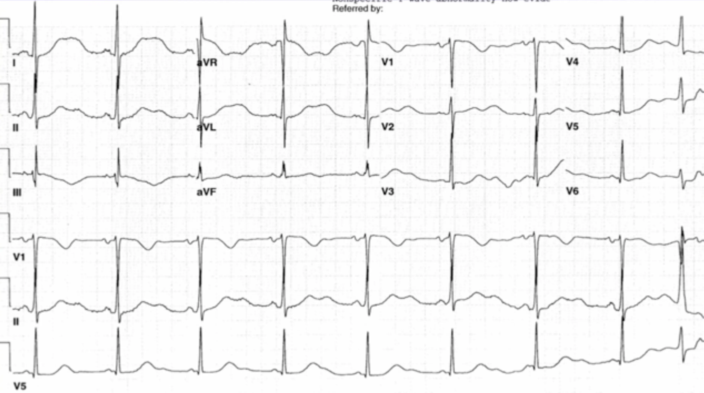
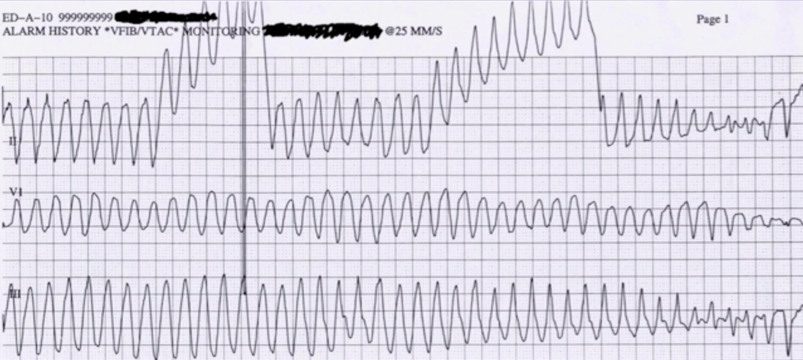

Fall 7
Auch der letzte Fall spielte sich im Universitätskrankenhaus in Baltimore, Maryland, ab. Ein 55-jähriger Mann erlitt in einer Obdachlosenunterkunft nach einer Thanksgiving-Mahlzeit einen beobachteten Krampfanfall. Im Krankenhaus angekommen, ist er noch somnolent, leicht bradykard (50bpm), ansonsten unauffällig; es gibt keine Anzeichen für ein Sturzereignis. Während der Untersuchung beginnt der Patient erneut zu krampfen. Der Anfall endet nach etwa 10 Sekunden von selbst. Danach zeigt der Monitor wieder eine Frequenz von 50bpm.
EKG

Wenige Minuten später folgt ein weiterer Anfall.
EKG während des Krampfanfalls

Long-QT-Syndrom (und Torsade de Pointes)
Beim Long-QT-Syndrom ist die Repolarisation der Kammern verzögert, was sich im EKG als verlängerte QT-Zeit zeigt.Das 'c' in QTc steht für "corrected": Die QT-Zeit verändert sich in Abhängigkeit von der Herzfrequenz. Um das Intervall unabhängig von der Frequenz beurteilen zu können, wurden verschiedene mathematische Korrekturformeln entwickelt. Die Verlängerung kann angeboren sein (Ionenkanalerkrankung) oder erworben, z.B. durch Medikamente, Elektrolytstörungen, Hypothermie etc. Eine QTc-Zeit von > 500ms geht mit einem deutlich erhöhten Risiko für Torsade de Pointes (TdP) einher!Entscheidend für die Bezeichnung "Torsade de Pointes" ist nicht das spindelförmige Aussehen, denn das kann auch bei anderen polymorphen VTs auftreten, sondern die verlängerte QT-Zeit. Ausgelöst wird die TdP typischerweise durch ein R-auf-T-Phänomen.